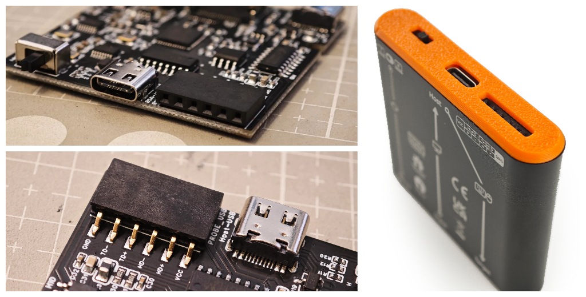
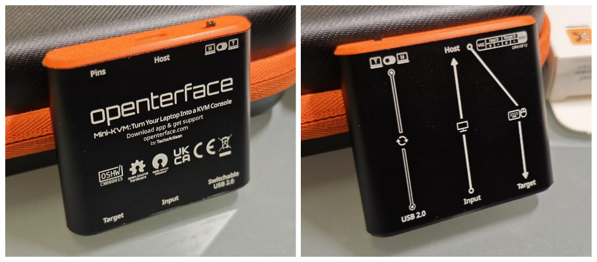

Prêt pour un défi DIY ? Rejoignez-nous au Show & Tell de l'OSHWA !


Salut à tous, je vais présenter le Défi DIY USB KVM 2024 lors du Show & Tell de l'OSHWA à 22h40 EST le 2 octobre. Si cela vous intéresse, n'oubliez pas de nous rejoindre ! Merci !
Salut à tous, je vais présenter le Défi DIY USB KVM 2024 lors du Show & Tell de l'OSHWA à 22h40 EST le 2 octobre. Si cela vous intéresse, n'oubliez pas de nous rejoindre ! Merci !
Bonjour à tous,
J'espère que vous allez bien. Cela fait un moment depuis notre dernière mise à jour. J'aurais aimé vous dire que tout se passe comme sur des roulettes pour Openterface, mais nous avons rencontré quelques obstacles qui vont retarder notre calendrier de livraison. Bien que ce ne soit pas ce que nous avions prévu, nous relevons ces défis avec détermination et faisons des progrès constants avec de nombreuses bonnes nouvelles à partager. Ce post est une lecture d'environ 7 minutes, alors plongeons dans les détails pour que vous sachiez exactement où nous en sommes et ce qui nous attend.
Avant de pouvoir lancer la production, nous devions passer les tests de qualité nécessaires conformément aux réglementations, en particulier la certification CE. Comme notre version du kit comprend non seulement le Mini-KVM mais aussi plusieurs accessoires, chaque pièce devait passer les tests CE. Ces tests ont pris plus de temps que prévu (il s'avère que les câbles peuvent être assez capricieux), mais la bonne nouvelle est que nous avons obtenu la certification CE pour notre Mini-KVM et tous ses composants ! Voici un aperçu des certifications pour toutes nos pièces : Mini-KVM, câble HDMI, câble Type-C orange, câble Type-C court noir et câble VGA2HDMI. Avec la certification en main, notre calendrier de production est maintenant certain, et nos fabricants produisent actuellement toutes les pièces pendant que je vous parle.
 Les exigences UKCA et CE sont les mêmes pour nos produits électroniques, avec la CE couvrant également la conformité RoHS.
Les exigences UKCA et CE sont les mêmes pour nos produits électroniques, avec la CE couvrant également la conformité RoHS.
Il y a deux semaines, nous avons rendu visite à l'un de nos fabricants pour former leurs responsables de ligne sur le contrôle qualité des câbles orange avant de les expédier. Maintenant, TOUS les câbles orange ont été produits et sont entreposés dans un coin de notre studio.
 Kevin et Shawn expliquaient les méthodes de test pour s'assurer que le câble orange fonctionne correctement avec notre Openterface Mini-KVM.
Kevin et Shawn expliquaient les méthodes de test pour s'assurer que le câble orange fonctionne correctement avec notre Openterface Mini-KVM.
Nous ferons la même tâche cette semaine pour former l'équipe QA en première ligne de production pour les autres pièces également. Voici des échantillons des câbles supplémentaires.
 Fièrement marqués de notre logo TechxArtisan, voici des échantillons du câble HDMI, du câble Type-C court et du câble VGA-vers-HDMI.
Fièrement marqués de notre logo TechxArtisan, voici des échantillons du câble HDMI, du câble Type-C court et du câble VGA-vers-HDMI.
Nous attendons que les autres pièces et Mini-KVMs arrivent bientôt de nos fabricants, à ce moment-là, nous vérifierons la qualité de chaque composant et les emballerons correctement dans notre studio avant expédition. En d'autres termes, notre équipe s'assurera personnellement de la qualité avant que cela n'arrive entre vos mains.
L'incertitude actuelle réside dans le processus d'expédition. Après avoir enquêté sur plusieurs entreprises de transport, nous avons constaté que l'expédition prendra plus de temps car nous transférerons probablement les colis via un entrepôt avant d'atteindre l'entrepôt de Crowd Supply. Nous débattons encore pour savoir si nous choisirons le fret maritime ou aérien—veuillez patienter encore quelques jours pendant que nous réglons les arrangements.
Le dédouanement est un autre obstacle potentiel qui pourrait causer des retards inattendus. Une fois que nos produits arriveront à l'entrepôt de Crowd Supply aux États-Unis, il leur faudra une à deux semaines pour être expédiés à l'échelle mondiale en fonction de chaque commande. Pour les soutiens en dehors des États-Unis, les colis individuels devront encore passer par l'expédition mondiale et le dédouanement dans le pays de destination.
En tenant compte de la situation actuelle et en ajoutant un peu de temps tampon, je reste prudemment optimiste que nous terminerons la livraison avant la fin de cette année, avec une nouvelle ETA pour la mi-janvier. Je suis vraiment désolé pour l'inconvénient et j'apprécie votre soutien et votre patience pendant ce changement.
Comme vous le savez peut-être de notre précédent post Reddit, nous avons décidé de mettre à niveau notre matériel vers la version V1.9, incluant un ensemble de broches d'extension hackables. Cela ne faisait pas partie du plan initial pour la campagne de financement participatif, mais nous pensons que cela améliore considérablement le potentiel d'utilisation plus large du matériel.

Les broches VCC, GND, Target D+, Target D-, Host D+ et Host D-—où 'D' signifie données USB.Une motivation clé était de permettre le basculement du commutateur USB au niveau logiciel. Pourquoi est-ce important ? Sur notre feuille de route, nous visons à prendre en charge une solution KVM-over-IP, telle que VNC, à l'avenir. L'idée est de faire correspondre le contrôle KVM local avec le protocole VNC, permettant aux utilisateurs de contrôler à distance l'ordinateur cible via l'ordinateur hôte. Dans un tel scénario à distance, la capacité des utilisateurs à basculer le port USB est essentielle, surtout lorsque des transferts de fichiers entre l'hôte et la cible sont nécessaires.
Les broches d'extension ouvrent également des possibilités supplémentaires, comme l'intégration avec iPadOS, le contrôle ATX, le pont réseau et le contournement audio. Bien que je ne plonge pas dans tous les détails ici, je vous encourage à rejoindre notre communauté Openterface pour en discuter davantage avec nous.
Cette mise à niveau matérielle pourrait potentiellement étendre notre solution Openterface pour fonctionner sur IP et inclure des fonctionnalités plus avancées tout en conservant sa force principale en tant qu'outil KVM-over-USB plug-and-play—parfait pour les professionnels de l'informatique naviguant dans des environnements informatiques incertains, comme des centres de données inconnus.
Je suis heureux de vous annoncer que la version V1.9 a passé nos tests internes de base et sera finalisée comme la version officielle pour tous nos soutiens. Cependant, cette mise à niveau matérielle nécessitera des tests supplémentaires, et tout développement basé sur ces broches d'extension sera expérimental et susceptible de contenir des bugs. C'est là que vous pouvez contribuer. Nous comptons sur la communauté open-source pour nous aider à améliorer Openterface ensemble.
Sur le plan logiciel, nous faisons des progrès passionnants. Nous nous plongeons maintenant dans l'application Openterface Android ! Découvrez ce tweet pour une démo précoce montrant un contrôle KVM fluide, le mouvement de la souris et les clics en action. D'autres fonctionnalités sont en cours, et comme toujours, une fois que nous aurons un peu plus peaufiné le code, cette application sera également open-source sur notre dépôt GitHub Openterface_Android.
 Utiliser simplement nos doigts pour contrôler un ordinateur Linux depuis une tablette Android. Sympa !
Utiliser simplement nos doigts pour contrôler un ordinateur Linux depuis une tablette Android. Sympa !
Notre version QT vient de recevoir une mise à jour pratique—vous pouvez maintenant transférer du texte de l'hôte à la cible ! Cette fonctionnalité est donc désormais prise en charge sur les applications hôtes macOS, Windows et Linux.
De plus, nous prévoyons également d'ajouter une fonctionnalité amusante — un mouvement automatique de la souris pour empêcher votre ordinateur cible de se mettre en veille. Devons-nous opter pour la balle de ping-pong rebondissant sur l'écran ou l'effet classique de l'économiseur d'écran DVD ? Votez et commentez le tweet 😃
Nous avons expérimenté divers prototypes et designs d'emballage pour trouver le parfait équilibre entre plusieurs facteurs clés :
De plus, nous avons apporté plusieurs améliorations à l'ancien sac à outils, notamment :
Nous avons choisi ce matériau car il offre le parfait équilibre entre un coût abordable, une sensation agréable au toucher et une durabilité suffisante pour protéger les articles à l'intérieur. Nous sommes convaincus que vous allez l'adorer.

Nous mettons également à jour les étiquettes sur le boîtier en aluminium pour les rendre aussi informatives et visuellement attrayantes que possible. Nous espérons que ces améliorations amélioreront votre expérience utilisateur et faciliteront la prise en main d'Openterface.

Nous finalisons le manuel Openterface, qui sera disponible en anglais, allemand, français, japonais et chinois. Désolé si nous avons manqué votre langue—notre boîte n'est pas de la taille d'un TARDIS (la cabine de police du Docteur Who) ! Mais nous ferons de notre mieux pour ajouter plus de traductions sur notre site web.

J'ai utilisé ChatGPT pour m'aider avec les traductions, mais il peut parfois manquer de précision dans les formulations et le choix des mots. Si cela ne vous dérange pas, j'apprécierais grandement toute aide pour revoir le contenu dans d'autres langues, en particulier pour les documents imprimés que nous sommes sur le point de finaliser. J'ai mis à jour tout le contenu textuel pour l'emballage dans notre dossier GitHub product-printed-materials, où vous pouvez examiner et soumettre des améliorations. Vous pouvez également m'envoyer un message directement. Merci !
Nous nous excusons encore pour les retards et le changement de l'ETA de notre produit. Merci pour votre patience et de rester avec nous—nous travaillons dur pour vous livrer cela dès que possible ! Je vous tiendrai informés dès que notre expédition sera arrangée. D'autres mises à jour sont en cours, alors rejoignez notre communauté Openterface et restez à l'écoute !
À bientôt,
Billy Wang
Chef de Produit
Équipe Openterface | TechxArtisan
Salut à tous,
Cela fait un moment que notre campagne de financement participatif s'est terminée, et nous avons des mises à jour fantastiques à partager avec vous. Nous sommes ravis de plonger tête baissée dans la phase de production de notre Openterface Mini-KVM et de vous tenir informés de nos progrès.
Tout d'abord, le Teardown 2024 du mois dernier, organisé par Crowd Supply à Portland, a été tout simplement incroyable. C'était fantastique de rencontrer tant de nos amis tech et soutiens en personne à notre table de démonstration ! Vos mots gentils sont une grande source d'encouragement et de motivation pour nous. Voici quelques photos de l'événement :

Un grand merci à Electromaker pour avoir mis en avant notre produit pendant l'événement ! Découvrez notre discussion dans cette vidéo :
En ce moment, nous sommes occupés à commander des pièces et des puces comme les CH9329 et CH340 alors que nous nous préparons pour la production. Nous soumettons également notre Mini-KVM et nos câbles aux tests de certification CE, RoHS et UKCA. Si tout se passe bien, nous commencerons la production dans les usines bientôt. Notre équipe veille à ce que chaque étape de la ligne de production se déroule sans accroc pour livrer un produit de qualité, à la fois amusant et fiable ! Voici quelques photos des rapports de test pour RoHS et CE de notre câble Type-C orange :

Restez à l'écoute, car nous aurons d'autres rapports similaires pour nos Mini-KVMs et autres câbles afin de garantir qu'ils répondent à toutes les normes de certification requises.
Nous sommes ravis d'annoncer que notre Openterface Mini-KVM est maintenant officiellement certifié OSHWA comme étant entièrement open-source ! 🥳 Vous pouvez consulter notre certification ici : OSHWA UID CN000015. Nous nous engageons à maintenir à la fois le logiciel et le matériel open-source, permettant aux passionnés de technologie d'explorer le potentiel de l'USB KVM, de contribuer à son développement et de construire ensemble une communauté dynamique.

Nous venons de lancer la version matérielle V1.9 avec des broches supplémentaires : VCC, GND, Target D+, Target D-, Host D+, Host D- pour encore plus de possibilités de bidouillage ! Ces broches de données sont connectées au hub USB de la cible et de l'hôte. Vous pouvez maintenant créer des extensions DIY pour Openterface — pensez à l'ATX, au pont réseau, au contournement audio, et plus encore. Quelles idées créatives avez-vous pour bidouiller notre Mini-KVM avec ces broches ? Rejoignez notre Reddit ou Discord, partagez vos idées et amusez-vous à coder avec nous !

Nous avons réussi à faire tourner notre application hôte QT sur un environnement Pi ! Ce qui est encore plus excitant, c'est la façon dont notre Mini-KVM peut s'associer avec le uConsole de Clockwork pour en faire un outil KVM portable. C'est super pratique pour le plug-and-play et le dépannage rapide de tout appareil sans écran à proximité.
Notre équipe de développement, dirigée par Kevin, travaille sans relâche pour tester et affiner le code. Rejoignez notre Discord de Techxartisan pour discuter avec notre équipe de développement et de bêta et rester informé de nos progrès. Pendant ce temps, Billy s'occupe de toute la paperasse et finalise le design de notre produit, de l'emballage et du manuel du produit.
Voici un aperçu de nos impressions et étiquettes mises à jour pour le boîtier en aluminium, présentées dans le tweet de Kazubu lorsque Billy les a partagées avec lui à Tokyo, au Japon :

Nous sommes actuellement dans les temps et travaillons dur pour que nos Mini-KVMs soient entre vos mains d'ici la fin septembre.
Nous aimerions votre aide pour faire connaître notre Mini-KVM. Nous espérons qu'il pourra bénéficier à plus de passionnés de technologie et faciliter la vie de tous ceux qui gèrent des appareils sans écran.
Merci beaucoup pour tout votre soutien et votre enthousiasme. Nous n'aurions pas pu y arriver sans vous !
À bientôt,
Billy Wang
Équipe Openterface
Salut tout le monde ! Nous avons des nouvelles fantastiques à partager !
Tout d'abord, je ne peux pas vous remercier assez pour votre incroyable soutien. Notre campagne de financement participatif a dépassé tous ses objectifs le 14 juin, atteignant 248 000 $ grâce au soutien incroyable de plus de 1110 contributeurs et Crowd Supply.

Ce succès nous permet d'améliorer encore le Mini-KVM ! Nous n'aurions pas pu y arriver sans vous—sincèrement, merci du fond du cœur ! 🧡 Nous allons travailler d'arrache-pied pour que vous receviez votre produit très bientôt !
Alors, voici une histoire amusante : Comme je l'ai mentionné dans ce post, Kevin et moi avons fait un pari. Si nous pouvions obtenir 100 nouveaux contributeurs dans les dernières 36 heures, je devais voler aux États-Unis pour Teardown 2024 de Crowd Supply. Eh bien, devinez quoi ? Nous n'avons pas seulement atteint 100, nous avons obtenu 165 nouveaux contributeurs ! Je suis donc super excité d'annoncer que je serai présent en personne à Teardown 2024 ce vendredi (21 juin) et ce week-end.
Teardown est l'événement phare annuel de Crowd Supply consacré à tout ce qui touche au matériel - avec des conférences, des démonstrations, des ateliers, et plus encore.
Teardown 2024 Lloyd Center Mall Portland, Oregon 21-23 juin 2024

J'aurai une table de démonstration à l'événement Teardown : Découvrez-la ici !
Vous êtes dans la région de Portland ? Ce serait fantastique de vous rencontrer à l'événement ! Achetez votre billet pour Teardown maintenant et j'espère vous y voir—venez me dire bonjour !
Si vous ne pouvez pas assister à l'événement, ne vous inquiétez pas. Vous pouvez toujours me retrouver sur notre Discord et Subreddit pendant la conférence. Vous pouvez m'envoyer des messages ou discuter avec moi en temps réel, car je pourrais diffuser en direct pendant les trois jours où je serai à la table de démonstration, alors rejoignez notre communauté maintenant pour ne rien manquer.
Maintenant, pour un peu de fun : Je mets en place une compétition de jeux vidéo à Teardown 2024. Je vais démontrer comment notre Mini-KVM fonctionne avec l'ordinateur portable, uConsole, qui est essentiellement un Raspberry Pi. Regardez mon tweet sur X ici pour voir comment je vais le configurer avec le Mini-KVM.

Je pense utiliser des jeux comme Pac-Man, The King of Fighters '97 et Tetris pour le défi de jeu. Et voici le meilleur—les gagnants pourront repartir avec un Mini-KVM ! Alors, venez jouer avec moi pour gagner !
Comme toujours, nous préparons des choses excitantes, et j'aurai une annonce super excitante à Teardown ! Restez à l'écoute pour plus de mises à jour. J'ai hâte de vous voir à Teardown 2024 !
À bientôt,
Billy Wang
Équipe Openterface | TechxArtisan Studio
Salut à tous,
Nous voulions partager des nouvelles excitantes de notre équipe bêta sur notre chaîne Discord ! Notre Mini-KVM Openterface fonctionne à merveille en première ligne technologique, et nous avons des images fantastiques à vous montrer. Découvrez-les et voyez de quoi tout le monde parle !


Le temps presse ! Ne manquez pas votre chance de nous soutenir sur Crowd Supply et d'obtenir le Mini-KVM Openterface à un prix super abordable de 79 $ - 99 $. La campagne se termine le 13 juin 2024 à 16h59 PDT, et les prix augmenteront après la campagne à mesure que le produit évolue. Alors, agissez maintenant et profitez de cette offre !
Comme beaucoup d'entre vous l'ont vu sur la page principale de Crowd Supply, l'événement Teardown 2024 suscite beaucoup d'enthousiasme. J'ai hâte d'y assister en personne et de rencontrer nos incroyables soutiens !
Voici un pari amusant que nous avons dans notre équipe :
Actuellement, nous avons environ 950 soutiens pour notre projet. Kevin Peng, notre directeur technique, et moi avons fait un pari. Si nous parvenons à obtenir 100 soutiens supplémentaires dans les dernières heures, mes frais de voyage pour le voyage à Portland seront couverts par notre studio. Sinon, je devrai payer moi-même, ce qui signifie quelques milliers de dollars de ma poche !
Donc, je fais appel à tous nos abonnés et nouveaux amis du Mini-KVM Openterface pour nous aider à franchir ces dernières heures. Atteignons plus de 1050 soutiens et faisons de ce voyage une réalité !
Surtout, veuillez aider à faire passer le mot sur la fin de notre campagne. Nous nous engageons à construire cet appareil pratique et à vous le livrer en qualité optimale.
Nous avons mis tout notre cœur dans ce projet au cours des 8 derniers mois. Vous pouvez voir tous nos efforts dans les mises à jour ci-dessous et consulter nos publications historiques sur notre subreddit r/Openterface_miniKVM :
La Campagne de Financement Participatif du Mini-KVM Openterface Est Maintenant en Ligne ! 30 avril 2024
Questions Fréquemment Posées 11 mai 2024
Du Développement à Vos Mains : Les Coulisses 28 mai 2024
Discussion Informelle avec David Groom de MAKE: Magazine : L'Histoire du Mini-KVM Openterface 🎙️ 31 mai 2024
Mises à Jour Épiques & Dernière Semaine - Dernière Chance de Soutenir le Mini-KVM ! 8 juin 2024
Alors, soutenez-nous dans ces dernières heures ! À bientôt !
Billy Wang
Chef de Projet
Équipe Openterface
Salut à tous !
Le temps passe vite quand on s'amuse ! Nous sommes maintenant dans la dernière semaine de notre campagne de financement pour le Mini-KVM d'Openterface sur Crowd Supply. Plongeons dans quelques mises à jour passionnantes !
Nous avons de super nouvelles pour vous – notre mini-KVM prend désormais en charge macOS, Windows et Linux ! Et en plus, tout est open-source !
🎉 Découvrez les détails pour chaque système ci-dessous :


Nous avons donné un coup de jeune à notre dépôt matériel ! Il est maintenant rempli de fiches techniques, modèles 3D, nomenclatures et schémas – tout ce dont vous avez besoin pour vous familiariser avec notre gadget.

Consultez le dépôt matériel : Openterface_Mini-KVM_Hardware
Que vous soyez un pro chevronné ou un débutant, nous voulons vos retours et suggestions folles ! Et pour vous, les makers, pourquoi ne pas essayer de construire notre mini-KVM à partir de zéro ? Modifiez notre code, appropriez-vous-le et montrez-nous ce que vous avez fait !

Vous vous souvenez de notre câble Type-C orange stylé avec une sensation de silicone agréable ? Nous avons reçu les premiers échantillons, et ils sont superbes ! Ces câbles supportent la charge rapide de 240W (Tension DC50V, Courant 5A, Puissance 240W) et fonctionnent parfaitement avec nos mini-KVM. Un grand merci à notre fabricant et à nos soutiens pour avoir rendu cela possible !

Avec le nouvel adaptateur pratique attaché à notre câble Type-C de 1,5 m et la mise à jour du câble VGA vers HDMI de 1 m de long, nous pensons qu'il est nécessaire d'augmenter la taille de notre sac à outils à 16 cm L x 10 cm l x 3,8 cm H, offrant un peu plus d'espace !

Nous expérimentons différents designs pour nos boîtes d'emballage extérieures – colorées, grises, noires, et plus encore. Nous penchons pour le design coloré, mais nous voulons vos avis !

Découvrez les détails de notre kit d'outils bêta envoyé à notre équipe bêta ici. Faites-nous savoir ce que vous en pensez ! Juste un petit rappel, ce design d'emballage n'est pas final. Nous devrons peut-être encore ajuster la taille de la boîte et ajouter des détails essentiels comme la marque CE et d'autres informations requises.
C'est la dernière semaine de notre campagne. Soutenez-nous maintenant pour obtenir le Mini-KVM d'Openterface à un prix avantageux. Les prix post-campagne sont susceptibles d'augmenter à mesure que le produit mûrit. Ne manquez pas cette opportunité – agissez maintenant !
Nous comprenons le scepticisme dû aux projets de financement participatif frauduleux. Voici pourquoi vous pouvez nous faire confiance :
Faites confiance à Crowd Supply : Depuis 2012, Crowd Supply est une plateforme de premier plan pour les produits électroniques, protégeant vos droits en tant que soutien, supervisant de près notre développement et nous fournissant des conseils professionnels pour garantir que ce que nous créons est parfait pour vous.
Faites confiance à notre équipe : Nous avons plus de six ans d'expérience dans l'IoT, l'IA et l'art technologique. En savoir plus sur nous sur notre site TechxArtisan Studio.
Faites confiance à notre culture : Nous nous concentrons sur l'excellence technique et l'expérience utilisateur, en adoptant la collaboration open-source. Rejoignez notre communauté sur Reddit r/Openterface_miniKVM et Discord TechxArtisan pour voir notre parcours depuis les premiers prototypes jusqu'à la version actuelle en pré-production.
Si vous avez encore des doutes, ce n'est pas grave ! Nous croyons que notre Mini-KVM d'Openterface finira par vous convaincre.
Nous préparons toujours quelque chose d'excitant, alors restez à l'écoute ! Si vous avez des questions, rejoignez-nous dans notre communauté ou envoyez-nous un email : info@techxartisan.com. Restez connectés et merci pour votre soutien ! 😄
À bientôt,
L'équipe Openterface | TechxArtisan Studio
Bonjour à tous !
Nous venons de terminer un super livestream sur YouTube avec David Groom de MAKE: Magazine ! Pendant la session, nous avons exploré l'histoire derrière notre Openterface Mini-KVM, une solution matérielle open-source innovante conçue pour contrôler facilement des appareils sans écran et des ordinateurs monocarte comme les Raspberry Pi en utilisant simplement votre ordinateur portable. Vous pouvez regarder le livestream sur YouTube pour plus de détails ou lire l'histoire ci-dessous.

L'aventure du Mini-KVM a commencé dans la ville animée de Guangzhou, en Chine, au sein de notre studio TechxArtisan. Au cours des cinq dernières années, nous avons été profondément impliqués dans de nombreux projets d'art technologique pour des artistes locaux et internationaux. Notre travail inclut la construction d'installations lumineuses interactives avec détection par IA, des bras robotiques pour des performances théâtrales, des mini-voitures autonomes qui résolvent des labyrinthes aléatoires, et même un chien robot conçu pour explorer des terres inconnues comme les déserts et les forêts.

Un défi récurrent dans notre travail était de gérer une multitude d'ordinateurs sans écran comme les Raspberry Pi et les Jetson Nano, qui manquaient de moniteurs, de claviers ou de connectivité réseau. Cela nous conduisait souvent à chercher frénétiquement des moniteurs et des claviers de rechange pour dépanner et accéder à ces appareils dans des conditions difficiles.
Au début, nous avons utilisé des solutions de fortune comme des moniteurs portables alimentés par des batteries et des mini-claviers sans fil avec pavés tactiles. Cependant, ces équipements étaient souvent oubliés ou égarés, ce qui a suscité le besoin d'une solution matérielle dédiée pouvant tirer parti des ordinateurs portables que nous transportions toujours pour coder et configurer.
 Ces deux gadgets doivent être transportés pour les projets sur site.
Ces deux gadgets doivent être transportés pour les projets sur site.
Notre premier prototype DIY était une combinaison simple mais efficace d'une carte de capture pour récupérer la vidéo de l'appareil sans écran et d'un simulateur de clavier/souris USB, le tout intégré dans un seul câble USB connecté à nos ordinateurs portables.
 L'une des premières versions du PCB du mini-KVM
L'une des premières versions du PCB du mini-KVM
Nous avons présenté nos projets d'art technologique au Shenzhen Maker Faire en novembre 2023, avec l'intention de montrer le prototype du mini-KVM à David. Cependant, nous étions tellement excités par les cadeaux de David que nous l'avons oublié !
 Les autocollants et les cartes postales de MAKE: Magazine sont vraiment cool !
Les autocollants et les cartes postales de MAKE: Magazine sont vraiment cool !
Après avoir partagé notre prototype sur Reddit, nous avons reçu des retours inestimables de la communauté, nous encourageant à affiner et développer notre solution en un produit abouti. Ce soutien communautaire a été essentiel pour transformer notre appareil de fortune en un outil élégant et efficace pour les amateurs de homelab, les administrateurs système, les passionnés de technologie et tous ceux qui travaillent avec des ordinateurs sans écran.
 Nous avons reçu énormément de retours de la part des homelabbers
Nous avons reçu énormément de retours de la part des homelabbers
Malgré les doutes initiaux sur la concurrence avec des solutions similaires existantes, la réponse positive et les suggestions constructives des communautés en ligne ont aidé à clarifier les cas d'utilisation potentiels et à renforcer notre confiance. Sans ce soutien et cette validation de nos efforts, nous n'aurions peut-être pas poursuivi le projet.
La campagne de financement participatif pour l'Openterface Mini-KVM sur Crowd Supply prend sérieusement de l'ampleur, avec environ deux semaines restantes. Cette campagne ne concerne pas seulement le développement du Mini-KVM ; c'est un témoignage de la puissance de l'innovation communautaire. Ensuite, nous plongerons dans la gestion de la production, les améliorations logicielles et la livraison de ce gadget pratique à nos formidables contributeurs, le tout soutenu par notre incroyable communauté open-source.
 Les testeurs bêta partagent leur utilisation de l'Openterface Mini-KVM dans leurs tâches techniques quotidiennes sur le Discord de TechxArtisan
Les testeurs bêta partagent leur utilisation de l'Openterface Mini-KVM dans leurs tâches techniques quotidiennes sur le Discord de TechxArtisan
L'Openterface Mini-KVM est un témoignage de notre créativité et de notre persévérance, ainsi que du soutien de la communauté open-source. Ce qui a commencé comme une solution simple à nos défis personnels s'est transformé en un outil polyvalent et open-source prêt à bénéficier aux hackers, bidouilleurs et passionnés de technologie du monde entier. Restez à l'écoute pour plus de mises à jour à mesure que le Mini-KVM se rapproche de sa sortie officielle !
Bonjour à tous !
Nous sommes de retour avec une nouvelle mise à jour de notre campagne de financement participatif, et nous avons des nouvelles passionnantes à partager !
Tout d'abord, nous sommes absolument ravis d'annoncer que nous avons atteint un incroyable 1100% de notre objectif de financement initial ! Un immense merci à chacun d'entre vous. Votre soutien a été tout simplement phénoménal !
Nous avons été très occupés sur le front de la production ! Cette semaine, nous avons visité la ville technologique de Shenzhen et avons eu la chance de faire une visite guidée de l'une des meilleures usines de technologie. Ces gens travaillent avec de grands noms comme Meta, ABB et Blaupunkt, et c'était incroyable de voir leurs lignes de production avancées et leurs machines de contrôle qualité en action. J'aimerais pouvoir partager plus de photos, mais en voici une avec un peu de mosaïque numérique pour des raisons de confidentialité.

(Nous discutions du contrôle qualité avec le responsable de la ligne de production.)
Nous sommes très positifs quant à ce partenariat et à leur enthousiasme à soutenir une startup technologique comme la nôtre. Nous nous engageons à ce que la phase de fabrication soit gérée avec le plus grand soin et la meilleure qualité possible pour que nous puissions vous livrer notre produit bientôt ! Voici une photo de notre équipe principale à l'entrée de l'usine :

(De gauche à droite : Shawn, Billy, Kevin, Vileer.)
Nous cherchons toujours à nous améliorer, et notre câble VGA vers HDMI a maintenant été amélioré à une longueur de 1 mètre avec une qualité supérieure, comme vous pouvez le voir dans notre mise à jour de la semaine 2.
Ensuite, nous examinons également notre câble Type-C de 1,5 mètre pour la connexion à l'ordinateur hôte. Le Type-C devient de plus en plus courant sur les nouveaux ordinateurs, portables et même serveurs. Après avoir testé de nombreux fabricants, nous en avons trouvé un capable de produire ce câble orange élégant en silicone qui répond à nos normes de qualité.
Actuellement, un adaptateur Type-C vers USB-A supplémentaire est nécessaire si notre Mini-KVM fonctionne avec un ordinateur hôte qui n'a que des ports USB-A.

Nous savons que c'est un peu gênant, donc nous travaillons en étroite collaboration avec notre fabricant pour l'améliorer en intégrant un adaptateur Type-C vers USB-A attaché. Voici une maquette de ce à quoi cela pourrait ressembler.

Ce câble orange élégant, avec une bonne sensation de silicone et une longueur de 1,5 mètre, dispose de connecteurs Type-C aux deux extrémités et comprend un adaptateur pour convertir une extrémité de Type-C à USB-A. Il n'existe pas sur le marché et nécessite notre production OEM personnalisée. Nous visons à inclure cette solution dans notre kit final pour les contributeurs, mais je suis encore en train de faire des calculs ! Pour que cela se réalise, nous avons besoin de plus de soutien pour réduire le coût global de production de notre kit Mini-KVM. Étant donné les chiffres actuels de financement participatif et les coûts de production, la fabrication de ce câble Type-C personnalisé devient plus faisable, car nous approchons du point d'équilibre. Je tiendrai tout le monde informé dans la communauté Openterface de tout progrès !
De votre côté, si vous trouvez notre projet prometteur et pensez que le Mini-KVM peut faciliter votre vie technologique, veuillez envisager de nous soutenir et de partager l'information avec vos amis. Assurons-nous de pouvoir améliorer encore le produit tout en le gardant abordable pour tout le monde dans cette campagne de financement participatif ! Merci beaucoup !
Veuillez être indulgents pendant cette phase de développement précoce, car il y a encore des bugs et des changements dans nos applications hôtes. C'est là que notre équipe bêta entre en jeu ! Nous avons déjà organisé deux séries de tests bêta. Consultez nos publications ici pour en savoir plus :
Comme vous pouvez le voir dans les publications ci-dessus, nous avons reçu un nombre impressionnant de candidatures fantastiques pour les séries 1 et 2, et il a été vraiment difficile de sélectionner les candidats parmi un groupe aussi brillant. Nous avons dû prendre des décisions difficiles en raison du nombre limité de places disponibles à cette phase exclusive !
Notre équipe bêta est une collaboration exceptionnelle et véritablement mondiale, avec des membres des États-Unis 🇺🇸, du Royaume-Uni 🇬🇧, du Japon 🇯🇵, de l'Allemagne 🇩🇪, de la République tchèque 🇨🇿, de la Norvège 🇳🇴, de la Belgique 🇧🇪, de la France 🇫🇷, de l'Autriche 🇦🇹, de l'Australie 🇦🇺, de la Pologne 🇵🇱, des Pays-Bas 🇳🇱, de la Chine 🇨🇳, et d'autres à venir. Ces testeurs apportent une expérience de développement, des cas d'utilisation réels pour le Mini-KVM Openterface, et une passion pour soutenir des projets open source comme le nôtre. Notre équipe bêta utilise déjà ce gadget pratique dans leurs tâches quotidiennes, soulève des problèmes et suggère des fonctionnalités pour que nous puissions encore l'améliorer.
Bien que la plupart d'entre vous n'aient pas encore cette version précoce du mini-KVM, vous pouvez toujours consulter notre code sur GitHub et rejoindre la conversation avec nos équipes bêta et de développement dans notre communauté ! Faites-nous part de vos découvertes pour que nous puissions rendre cet appareil génial ensemble !
Voici les mises à jour sur notre dépôt open source GitHub :
Notre application hôte Openterface MacOS est déjà officiellement en ligne sur l'Apple App Store. Il suffit de rechercher 'Openterface' ou 'mini-KVM' pour trouver notre page d'application. Encore mieux, nous avons téléchargé le code complet sur notre dépôt GitHub : Openterface_MacOS pour le Mini-KVM. Vous pouvez consulter cette démonstration de fonctionnement de base sur MacOS.

QT est un cadre polyvalent que nous adorons, donc nous avons construit notre mini-KVM dessus. Pour la version Windows, consultez notre vidéo de démonstration précoce ici. Vous pouvez voir dans la démo qu'il fonctionne très bien avec une faible latence et une connexion stable ! Vous pouvez trouver et télécharger l'application bêta précoce depuis le dépôt GitHub.


Quant aux systèmes basés sur Linux, l'emballage pour différentes architectures comme ARM32, ARM64, ARMv7 et ARMv8, en particulier pour le Raspberry Pi, est un vrai défi (avec des heures et des heures d'attente pour l'emballage), mais nous y travaillons. Attendez-vous à une démo Linux bientôt, espérons-le dans une semaine.
Nous venons de télécharger tout notre code frais pour Openterface_QT sur GitHub ! Plongez-y et jetez un œil, mais préparez-vous – c'est encore au stade de développement précoce, donc il y a encore pas mal de bizarreries inévitables et du travail pour nous améliorer. Nous ne refuserions pas un coup de main. Si vous êtes développeur, rejoignez-nous. Bon codage !
Nous avons terminé la preuve de concept pour Android et WebExtension. Bien que ces projets soient des priorités moindres par rapport à macOS, Windows et Linux, soyez assurés qu'ils sont en cours. D'après nos recherches préliminaires, le projet Openterface_Android pourrait également prendre en charge ChromeOS. Si vous avez des idées, rejoignez la discussion !
Nous explorons également la compatibilité avec les systèmes mobiles d'Apple, comme iPadOS. En raison des contrôles stricts d'Apple, ces plateformes pourraient ne pas prendre en charge les connexions filaires avec des appareils tiers. Cependant, nous étudions des solutions potentielles, en particulier pour les iPads avec des puces de la série M. Notre camarade bêta Seb a déjà fait des découvertes intéressantes et cela vaut la peine d'être exploré davantage, bien que rien ne soit encore confirmé. Si vous avez des idées ou des suggestions, rejoignez notre communauté et discutons-en !

Nous commencerons à publier les détails matériels progressivement au cours des deux à trois prochaines semaines. De plus, pour maintenir un haut niveau d'open source, nous prévoyons de respecter les exigences de certification de l'Open Source Hardware Association (OSHWA).
En attendant, vous pouvez en savoir plus sur notre matériel ici : fiche technique et Comment ça marche pour l'instant. Cette page explique notre intégration de capture USB-HDMI, avec la puce CH9329 pour le contrôle du clavier et de la souris. Les passionnés de technologie pourraient trouver les détails sur cette puce particulièrement intéressants. De plus, notre mini-KVM utilise la puce CH340, prenant en charge deux hubs USB intégrés pour les côtés hôte et cible. Notre mini-KVM est comparable à de nombreuses cartes de capture vidéo actuellement sur le marché.
Nous travaillons dur ici et sommes en train de rendre open source à la fois notre logiciel et notre matériel. Les bonnes choses prennent du temps à se préparer ! Nous vous tiendrons informés de cette progression au sein de notre communauté. Merci pour votre patience et votre compréhension ! Restez à l'écoute et à bientôt !
Nous comprenons que certaines personnes puissent être sceptiques, étant donné le nombre de projets de financement participatif frauduleux. Voici quelques points qui pourraient vous rassurer sur notre projet de financement participatif :
Faites confiance à la plateforme Crowd Supply : C'est l'une des principales plateformes de financement participatif pour les produits électroniques aux États-Unis depuis 2012. L'équipe de Crowd Supply a suivi de près nos progrès de développement de l'Openterface Mini-KVM et nous a offert des conseils professionnels pour s'assurer que ce que nous créons est parfait pour vous. Un grand merci à l'équipe de Crowd Supply ici aussi ! De plus, vous pouvez en savoir plus sur la protection de vos droits en tant que contributeur sur la plateforme Crowd Supply, y compris pour notre projet : Guide Crowd Supply : Comment les contributeurs sont-ils protégés ? > "Chaque projet qui a jamais reçu des fonds via Crowd Supply a livré à ses contributeurs (ou est en voie de le faire). Vous ne financez pas le rêve de quelqu'un ; chez Crowd Supply, vous achetez un produit réel."
Faites confiance à l'expérience de notre équipe : Nous sommes un groupe de développeurs polyvalents, de créateurs habiles et de gestionnaires de projets et de production expérimentés, en particulier dans les travaux impliquant un mélange de développement matériel et logiciel. Nous sommes un studio créatif technologique innovant avec plus de six ans d'expérience dans des projets technologiques avancés dans des domaines tels que l'IoT, l'IA, l'informatique de périphérie et l'art technologique. Pour en savoir plus sur nous, consultez notre site web TechxArtisan Studio.
Faites confiance à la culture de notre équipe : Notre équipe est dédiée non seulement à l'excellence technique mais aussi à l'expérience utilisateur globale. Cela inclut tout, de la documentation utilisateur et développeur à l'esthétique du design. Nous sommes passionnés par la technologie de pointe et engageons fréquemment des discussions animées sur les nouvelles avancées sous divers angles. Ces débats nous aident à définir ce qui fait un excellent produit électronique et comment le concrétiser grâce à notre travail d'équipe. Cette approche collaborative garantit que nos produits améliorent l'expérience utilisateur et démontrent notre engagement envers la qualité et le détail. De plus, nous adoptons une culture de l'open source et de la collaboration communautaire.
Observez ce que nous avons accompli et faisons : Nous avons travaillé très dur sur ce projet. Vous pouvez rejoindre notre communauté sur Reddit et Discord, voir ce que nous avons créé depuis le tout premier prototype jusqu'à la version actuelle en pré-production, et rester informé de nos progrès à jour. Nous serions ravis de vous voir dans notre communauté et d'interagir avec nous !
Discutez directement avec nous : Si vous avez des questions ou des préoccupations concernant notre Mini-KVM, n'hésitez pas à m'envoyer un e-mail à info@techxartisan.com. De plus, nous prévoyons un livestream, animé par David Groom de MAKE: Magazine le mercredi 29. Nous discuterons de notre Openterface Mini-KVM et de l'histoire derrière. Je publierai la vidéo plus tard sur notre page communautaire.
Enfin, nous comprenons totalement si vous êtes encore incertains. C'est OK ! Si votre travail implique la gestion d'appareils sans écran, nous sommes convaincus que nos efforts pour créer l'Openterface Mini-KVM finiront par vous convaincre. Attendez et voyez ! 😄
Restez à l'écoute pour la mise à jour de la semaine prochaine, où nous plongerons dans plus de détails sur les fonctions de notre application hôte, sa feuille de route, les progrès de la production, les cas d'utilisation réels partagés par notre équipe bêta, et plus encore ! En attendant, consultez notre site web Openterface et FAQs, envisagez de nous soutenir sur Crowd Supply, et aidez à faire passer le mot !
Merci de nous lire et de faire partie de cette aventure avec nous ! Paix !
Meilleures salutations,
Billy Wang, Chef de Projet
Équipe Openterface | TechxArtisan Studio
Nous sommes ravis d'annoncer que la campagne de financement participatif pour l'Openterface Mini-KVM est maintenant en ligne ! Cet appareil riche en fonctionnalités, open-source et axé sur la communauté simplifie la manière dont vous contrôlez et interagissez avec les ordinateurs sans écran.
Il offre une solution KVM-over-USB compacte, légère et rapide qui élimine le besoin de claviers, souris, moniteurs ou configurations réseau supplémentaires. Vous pouvez contrôler un ordinateur sans écran directement depuis votre ordinateur portable ou de bureau, simplifiant ainsi votre installation et améliorant votre flux de travail.
Rejoignez-nous pour rendre votre vie technologique plus facile !

L'Openterface Mini-KVM est le compagnon idéal pour une large gamme d'utilisateurs et de scénarios :

Notre aventure dans la création de l'Openterface Mini-KVM a été déclenchée par nos propres défis et un désir collectif d'un outil plus efficace. Avec une histoire riche au sein de notre studio TechxArtisan développant des projets technologiques artistiques et des solutions IoT en extérieur, nous avons souvent été confrontés au dilemme de gérer des appareils dans des conditions réseau peu fiables sans le luxe de transporter du matériel supplémentaire. Motivés par des conversations avec des pairs et des retours d'une communauté partageant nos difficultés, nous avons entrepris de concevoir un appareil qui répond à ces besoins de manière fiable et sans effort.
Vous vous demandez peut-être, avec les diverses solutions KVM disponibles, pourquoi choisir l'Openterface Mini-KVM ? Voici pourquoi :
Compact et Efficace : Conçu pour les professionnels de l'informatique et les passionnés, notre solution KVM-over-USB brille dans les environnements avec un accès réseau limité ou inexistant, offrant un outil de dépannage portable, indépendant du réseau et rapide.
Abordabilité : Nous avons travaillé dur pour rendre l'Openterface Mini-KVM plus économique que ses homologues, garantissant qu'il soit accessible à tous ceux qui ont besoin de cet outil essentiel pour le travail ou les projets de loisirs.
Axé sur la Communauté et Open-Source : Au cœur de l'Openterface Mini-KVM, il s'agit de favoriser une communauté d'innovation et de collaboration. En adoptant les valeurs de l'open-source, nous invitons les utilisateurs à contribuer avec des fonctionnalités personnalisées et des améliorations, enrichissant les capacités et la polyvalence de l'outil.
Pour rester à jour avec les derniers développements, recevoir un support technique et vous connecter avec d'autres utilisateurs, nous vous invitons à visiter notre page de pré-lancement sur Crowd Supply, à explorer notre site web à openterface.com, et à rejoindre nos communautés subreddit r/Openterface_miniKVM et Discord TechxArtisan.
Embarquons ensemble dans cette aventure passionnante et révolutionnons la manière dont vous contrôlez les appareils sans écran. Rejoignez-nous pour faire de l'Openterface Mini-KVM une réalité !
À bientôt !